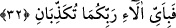

gibidir. Yahut görüşlerinin önemi ve ağırlığı, yahut her iki toplum teklif ile yükümlü ve
sorumlu olduklarından ya da yeryüzünde kadr ü kıymetleri büyük olduğundan onlara bu
isim verilmiştir. Nitekim, bir hadis-i şerifte: “Ben kadr ü kıymeti büyük iki ağırlık
bırakıyorum, Allah’ın Kitab’ı ve evlad ü ailemi” buyrulmuştur.[174]
Ca’fer-i Sâdık (r.a.) demiştir ki; insan ve cin’e “sekalân” adı verildi, çünkü
günahlarıyla ağırlaşırlar. Yahut gerçekten vücudları itibariyle ağır oldukları için bu isim
verilmiştir. Zaten ağır olanın yavaş, hafif olanın süratli olması âdetdendir. İnsan cinden
de ağırdır. Çünkü onun ağırlığı fazladır. Kıyâmet gününde hesabı zor verilecek şeylere
düşmekten sakındırarak karşılaşacakları tehlikelere karşı uyarmak için böyle ifâde
edilmiştir.
32. Hal böyle iken Rabbinizin nimetlerinden hangisini yalanlayabilirsiniz?
Keşfü’l-Esrâr’da denilmiştir ki; bil ki, bu sûre-i celilenin bir kısmında şiddetler,
zorluklar, azab, cehennem zikredilmiştir. Nimet ise tamamında iki yönden zikredilmiştir.
Birincisi, müminlerden azabı uzaklaştırmak içindir ki büyük şükrü gerektiren bir
nimettir. İkincisi, azabdan korkutmak ve ona karşı uyarmak içindir ki bu da büyük
nimettir. Çünkü, insanın korktuğundan kurtulmak için gösterdiği gayret, umduğu bir
nimete kavuşmak için olan çalışmasından daha büyüktür.
[171]. Tirmizî, Deavât, 91; Müsned, IV, 177.
[172]. İbn Kesîr, IV, 273. (İbn Mâce, c. 1, s. 198; İbn Hibbân, Sahîh, c. 3, s. 375;
Taberânî, el-Mu’cemu’l-evsat, c. 7, s. 228) (el-Mektebetü’ş-Şâmile).
[173]. Suyûtî, el-Câmiu’l-kebîr, c. 1, 6339, 8769; Hindî, Kenzu’l-ummâl, c. 4, s. 255.
(el-Mektebetü’ş-şâmile).
[174]. Tirmizî, Menâkıb, 32; Müsned, IV, 366-367. (Hâkim, Müstedrek, c. 11, s. 18;
Taberânî, el-Mu’cemu’l-evsat, c. 8, s. 185) (el-Mektebetü’ş-Şâmile).